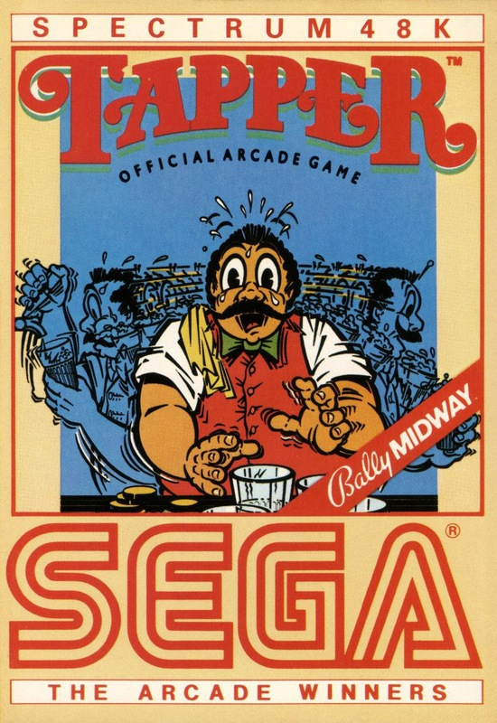
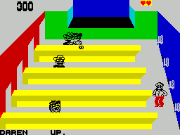
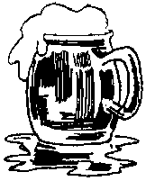

Tapper


{kind=link}

| Publisher: | US Gold |
| Price: | £7.95 |
| Year: | 1985 |
| Source: | CRASH, Issue 17 |

If you’ve ever wondered whether you would make a good barman, now’s your chance to find out with unbreakable glasses (well almost unbreakable). Tapper puts you in charge of several different types of bar, all filled with thirsty and rather over-demonstrative customers. The general object is to serve them drinks of soda Western style (ie slide the glasses along the length of the bar) and collect the glasses which they sling back at you. This sounds kinda easy, pardner, but it ain’t.
Each location contains four bars, and on the wall opposite the end of each is a soda dispenser. The customers come in through doors at the other end of each bar and proceed to waltz towards your barman. Should a customer get to the end of the bar before being served, the barman gets chucked out by being slid the length of the bar. Serving a customer means taking the barman to the appropriate soda dispenser and pressing fire. Pressing fire a second time sends the glass sailing along the bartop. Customers thus served retire to drink and may leave, or hang on for a refill. Once emptied, the glasses are slid back along the bartop towards the barman who must collect them before they fall right off the end (and end a life)! It’s important, however, in your enthusiasm, that you only send the required number of drinks along any bar, because extra ones will be ignored by the customers and slide off the end, thus losing you a life.

If you succeed in satisfying enough customers quickly enough then you can progress via the bonus screen to the next bar. The bonus screen consists of one of those ‘spot the tumbler’ puzzles. The Soda Bandit stands behind seven cans lined up on the bar and then shakes six of them before jumbling them up. You have to pick the unshaken one to get the bonus score.
Another form of bonus may be scored by picking up any tips which customers leave behind them on the bartop, at which point a duo of dancing girls come on stage to entertain you for a short while. Unfortunately this also entertains the customers who may look round and thus miss their drinks and let them sail off the bar.
The barman can be moved up or down the bars, and he wraps around top to bottom as well. He may also advance along the bars to collect mugs more quickly. With each bar advanced through, the pace hots up, with more customers per bar, and some of the later bars are split level to make life even more difficult. Tapper has three skill levels and it all adds up to a game which goes to prove whether a man can hold his drink — literally!
CRITICISM

‘I must admit that I haven’t seen the arcade version of this, but the Spectrum game looks somewhat unusual. The graphics aren’t impressive but functional, which is to say that they do their job. I feel sorry for the barman you control, who dashes about madly fulfilling an endless stream of customers’ needs, and the faster you do it, the quicker you get off a screen. It’s nice to have a break between frenzies when you are asked to guess the correct tumbler (you know the trick). This game gets extremely difficult as you progress and there are more and more people trying to quench their thirst through the varied bar layouts. Tapper is very playable, and its addictive qualities improve enormously when it’s played in a group, everyone egging you on. I haven’t worked so hard on a joystick since Decathlon!’
‘Phew! As office high-score champ on Tapper (45,000, on easy level admittedly) I have to admit I liked the game which was suitably panic-inducing at times when glasses were about to topple off the end of two or three bars at virtually the same time. After a while I found I could get into a rhythm, serving and collecting glasses — and although I discovered you could go down the bar, towards the approaching empties to collect them I only managed to get into trouble when I employed this tactic. Overall an amusing and addictive game, offering good arcade action entertainment without graphical frills. The attitude of the customers to the barman reminded me of last orders in my local — murderous if service isn’t instantaneous! Perhaps I should ask for a job....’
‘Tapper’s graphics are not instantly appealing, but as you play on, you realise that there is more going on that you first suppose, loads of amusing little details which all add to the general sense of fun. And fun is the key word in this game, a frenzied mad-cap dash to save your reputation as a barman, which requires a strong joystick wrist and unfailing fire finger. It’s useful, if not essential, that after walking along a bar to collect mugs, a single joystick press will take you straight to your station at the end of another bar. Within minutes, I found Tapper to be hugely playable, and the game has just the right mix of ingredients, pace and skills needed to make it highly addictive. No, it’s not a complex thinking game, it’s just fun to play and well worth having!’
COMMENTS
| Control keys: | User definable, four directional plus fire |
| Joystick: | Kempston, Sinclair 2, Cursor type |
| Keyboard play: | Very responsive |
| Use of colour: | Sensibly used within a screen, and varied throughout |
| Graphics: | Well sized, not very gainly but lively and amusing |
| Sound: | Continuous tune |
| Skill levels: | 3 |
| Screens: | 4 bar screens and the bonus screen |
| Lives: | 5 |
| Special features: | 2 player games |
| General Rating: | A highly amusing, playable and addictive arcade game. |
| Use of Computer: | 86% |
| Graphics: | 69% |
| Playability: | 88% |
| Getting Started: | 84% |
| Addictive Qualities: | 88% |
| Value For Money: | 79% |
| Overall: | 89% |